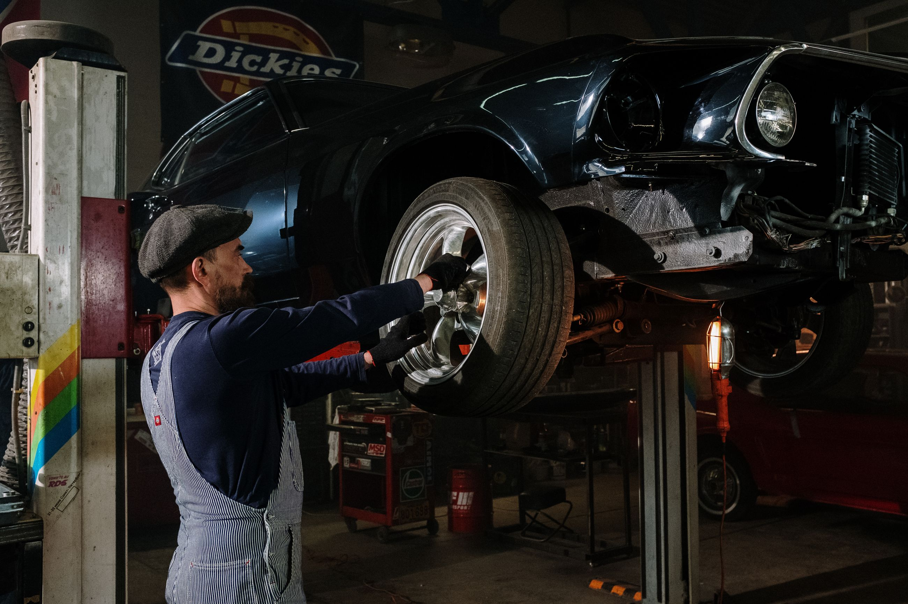
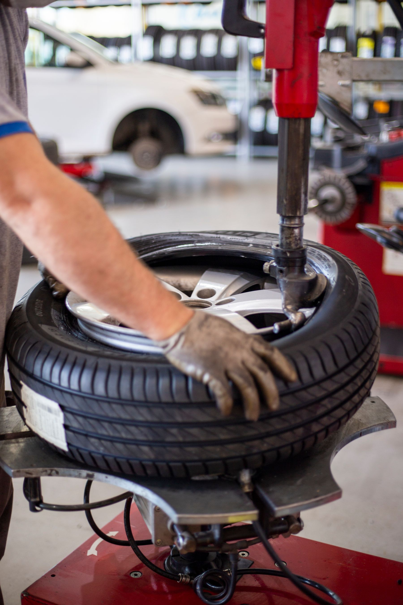

Ремонт ходовой
Обратитесь с вопросом о подвеске: опишите, когда появились стук, вибрация или посторонний звук
Обсудить ходовую
Автосервис в Миассе
Ходовая, бензиновые двигатели
и шиномонтаж в Машгородке
Выберите направление ремонта.
Стоимость и время приезда уточните в переписке

Обратитесь с вопросом о подвеске: опишите, когда появились стук, вибрация или посторонний звук
Обсудить ходовую
Сообщите марку, модель и что изменилось в работе двигателя. В переписке можно приложить фото или видео
Обсудить двигатель
Уточните возможность сезонной смены колёс. Для обсуждения укажите автомобиль и размер шин
Уточнить по колёсамФотографии иллюстрируют направления услуг и не являются работами сервиса 7.62
Для иномарок, отечественных
и грузовых автомобилей
Напишите марку и модель автомобиля, год выпуска и название запчасти. Если есть артикул или фото детали, приложите их к сообщению
Спросить о запчастиО сервисе рассказывают его посетители.
Два отзыва из карточки 2ГИС
В отзыве о шиномонтаже отметила тёплый и светлый бокс
Оставил отзыв после замены тормозных колодок
Telegram-юзернеймы авторов неизвестны. Имена указаны как в 2ГИС
Напишите, что случилось, и укажите модель автомобиля.
Если есть фото или видео, отправьте их вместе с сообщением
Миасс, Машгородок.
Перед поездкой уточните адрес и время приезда